위대한 걸작, 태초의 설계도
지도를 옆으로 밀어서 보세요. 작품 번호를 누르면 해설로 이동합니다.
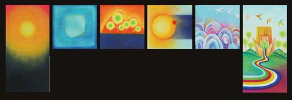
천지창조2번 벽 · 캔버스에 아크릴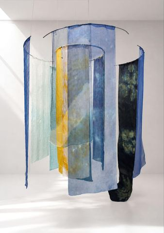
DAY 22번 벽 · 천에 염색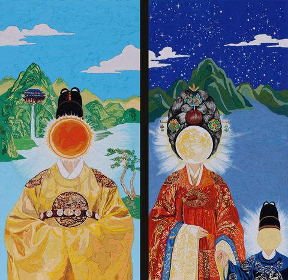
DAY 42번 벽 · 장지에 채색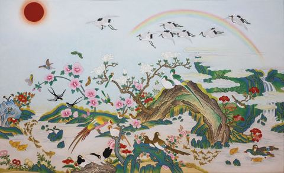
DAY 52번 벽 · 장지에 채색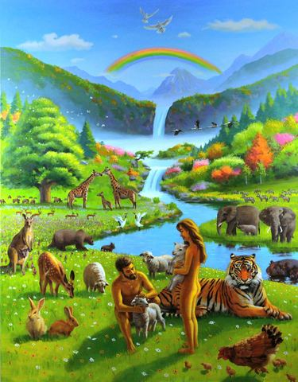
안식의 에덴동산캔버스에 아크릴, 유화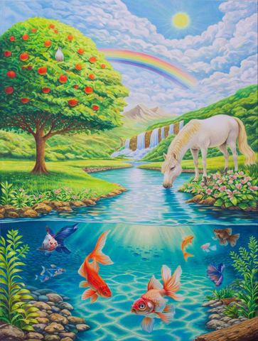
Paradise2번 벽 · 종이에 색연필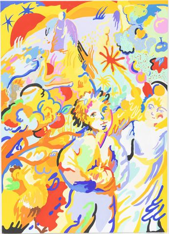
원형의 낙원2번 벽 · 캔버스에 아크릴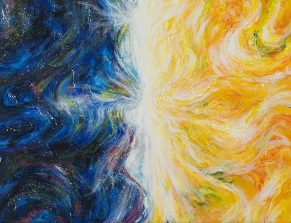
전쟁3번 벽 · 캔버스에 유화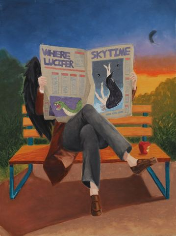
계명성은 어디에 있는가3번 벽 · 판넬에 오일파스텔, 아크릴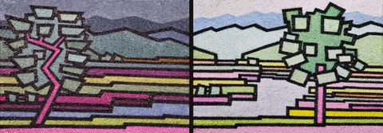
어긋난 조각캔버스에 혼합재료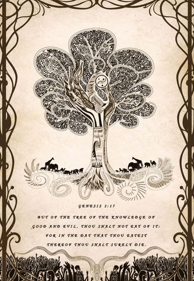
선악나무3번 벽 · 디지털 회화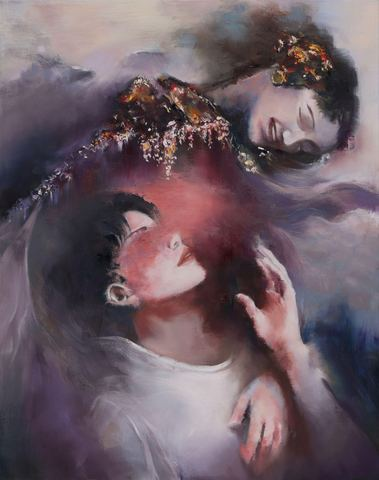
어둠의 잠식4번 벽 · 캔버스에 유화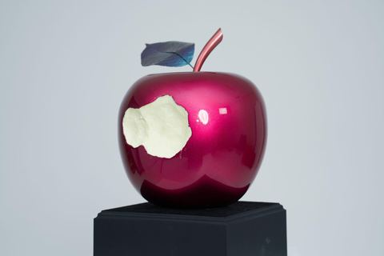
선악과4번 벽 · frp, 혼합재료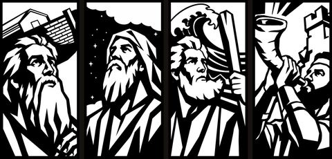
네 명의 선지자5번 벽 · 아크릴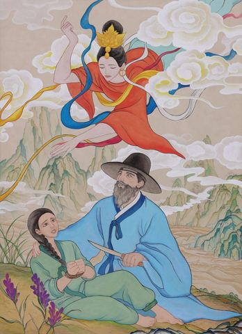
이삭을 번제로 드리는 아브라함5번 벽 · 장지에 채색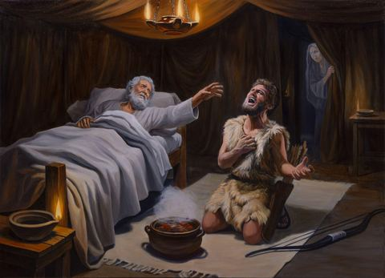
경홀함의 대가5번 벽 · 캔버스에 유화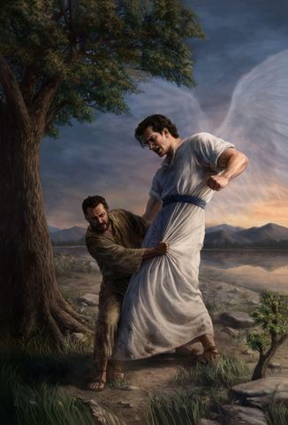
승리의 야곱5번 벽 · 디지털 회화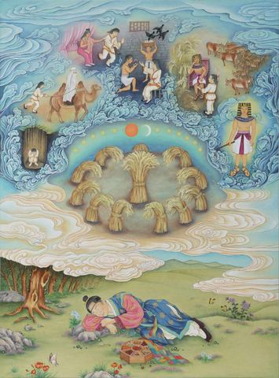
요셉의 꿈6번 벽 · 장지에 채색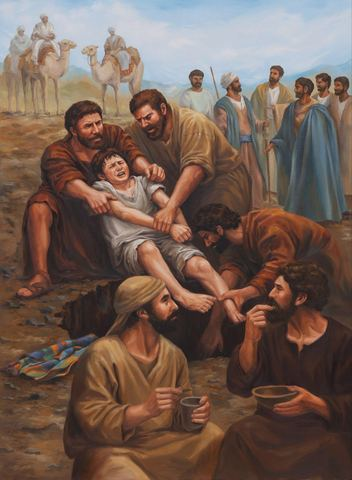
팔려가는 요셉5번 벽 · 캔버스에 유화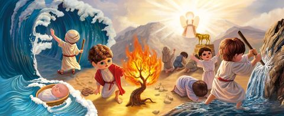
모세6번 벽 · 디지털 회화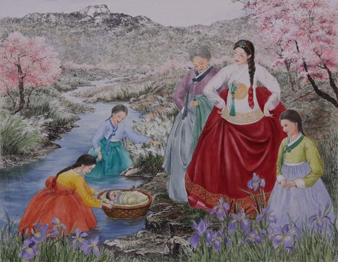
물에서 건진 아이장지에 채색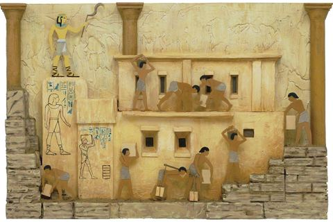
애굽의 종6-1번 벽 · 3D 프린팅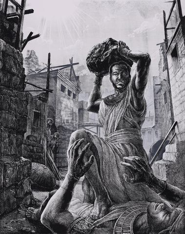
모세의 살인6-1번 벽 · 실크스크린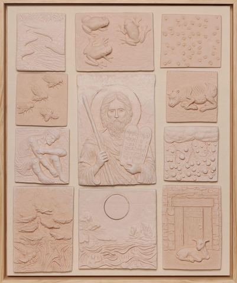
출애굽의 시작6-1번 벽 · 도자 부조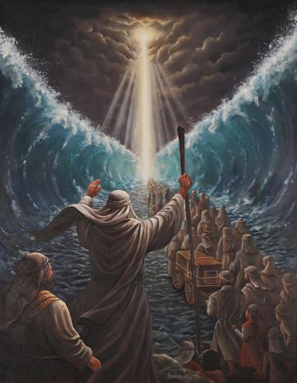
기적6-1번 벽 · 캔버스에 유화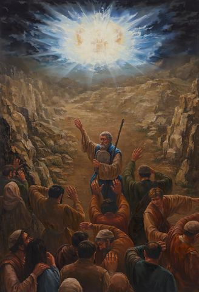
이스라엘과의 언약7번 벽 · 캔버스에 유화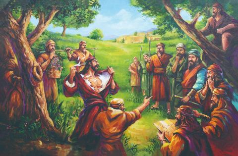
열둘의 시선7번 벽 · 캔버스에 아크릴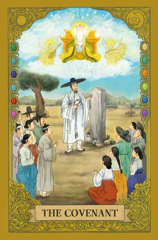
세겜의 언약디지털 회화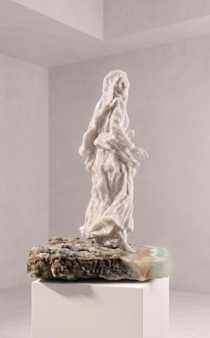
소돔의 메아리5번 벽 · 소금, 레진 3D프린팅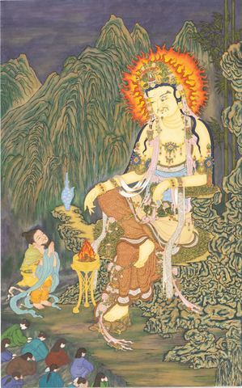
솔로몬의 변질장지에 채색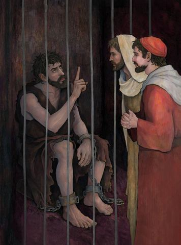
세례 요한의 질문7번 벽 · 디지털 회화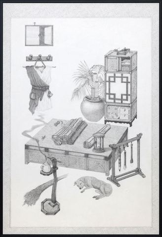
여명8번 벽 · 종이에 잉크, 펜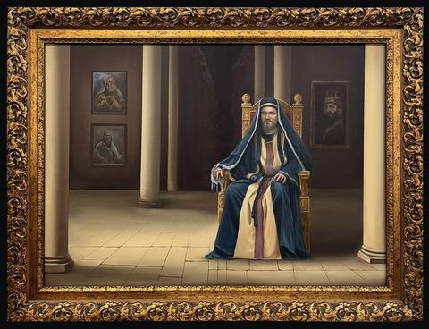
The last generation7번 벽 · 캔버스에 유화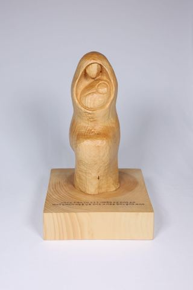
새로운 시대의 탄생8번 벽 · 은행나무 조각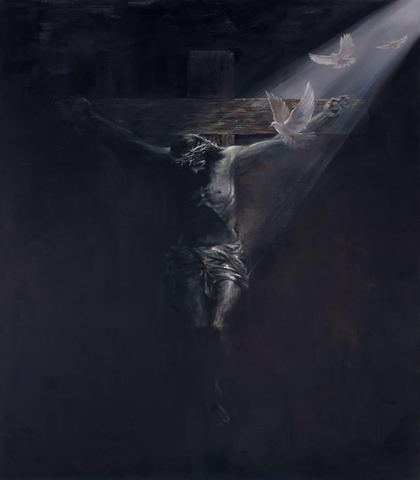
십자가8번 벽 · 캔버스에 유화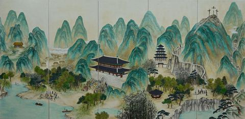
His PATH9번 벽 · 순지에 채색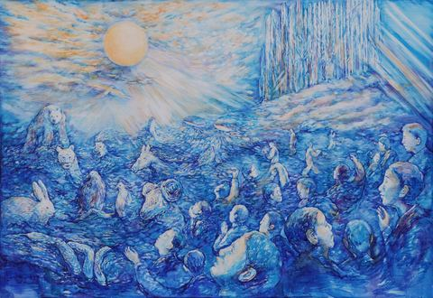
DONE수채화, 색연필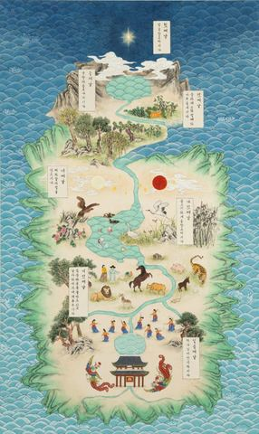
천도(하늘이 그린 설계)9번 벽 · 장지에 채색